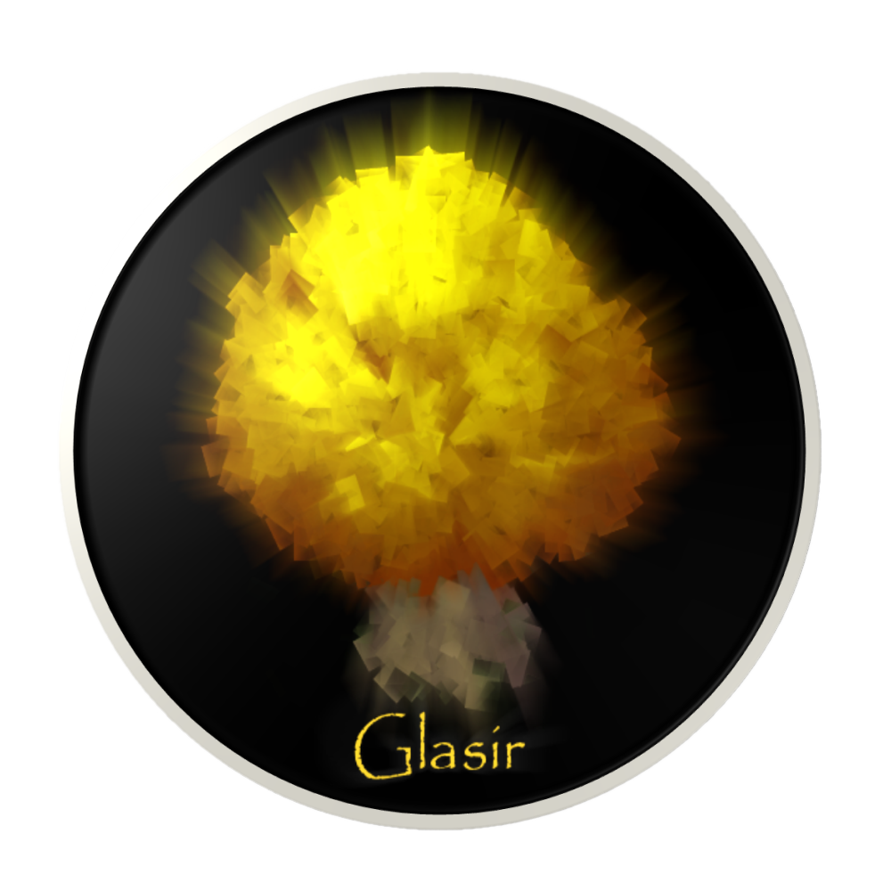

|  |
Glasir
1.0
Analyse your ADTrees
|
This is the complete list of members for Glasir.MainWindow, including all inherited members.
| Glasir (defined in Glasir.MainWindow) | Glasir.MainWindow | |
| MainWindow() | Glasir.MainWindow | |
| messageBox(string message) | Glasir.MainWindow | static |
| OnClosing(CancelEventArgs e) | Glasir.MainWindow | protected |
| testDomain1(object sender, SelectionChangedEventArgs args) | Glasir.MainWindow | |
| testDomain2(object sender, SelectionChangedEventArgs args) | Glasir.MainWindow | |
| testDomainFiltering(object sender, SelectionChangedEventArgs args) | Glasir.MainWindow |
 1.8.9.1
1.8.9.1